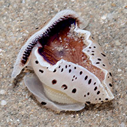
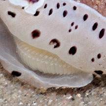
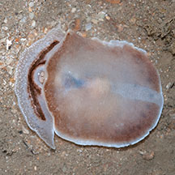
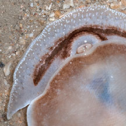
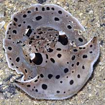

|
|
| sea slugs text index | photo index |
| Phylum Mollusca > Class Gastropoda > sea slugs |
| Moon-headed
sidegill slug Euselenops luniceps Family Pleurobranchidae updated May 2020 Where seen? This comical cartoon-like slug is only sometimes seen. When seen, often several are seen at the same time. And then none for some time. Elsewhere, they are found in sandy and silty shores. It was previously placed in Order Notaspidae, but is now placed in Order Pleurobranchomorpha. Features: 3-7cm. It is the only member of its genus and is distinctive. No other slug looks similar! Some have a dark underside, others a paler one. The small gill is on its right side which may be yellowish or white. |
 Changi East, Dec 12 |
 Underside. Changi, Apr 09 |
 Showing the gill on one side. Changi, Apr 09 |
| The slug is adapted for living in a sandy habitat. A broad foot and flattened body for crawling over sand or burrowing underneath. A long siphon on its back which brings fresh seawater into its gills while it is buried in the sand. With the incoming seawater the animal can also sense chemical released by potential prey nearby. It has a large oral veil fringed with lots of sensory 'hairs' on the underside to detect prey. The slug can swim for some distance by flapping the sides of its body. |
|
 Underside. |
 Closer look at oral veil and mouth. |
| Sometimes mistaken for a squid
or cuttlefish. What does it eat? Although it is a predator, little is known about what it eats. Although it appears they have a particular fondness for sea anemones. It has also been described that they are often seen on sand flats at low tide where they hunt and swallow whole any invertebrates that they touch with their sensitive oral veil. |
| Moon-headed sidegill slugs on Singapore shores |
On wildsingapore
flickr
|
| Other sightings on Singapore shores |
 Pulau Sudong, Dec 09 |
| Filmed on 31
Dec 08 at Sisters Islands Moon Headed Side Gilled Slug @ Big Sisters Island from SgBeachBum on Vimeo. |
| Filmed on 23
Jan 11 at Sisters Islands Moon-headed side-gill slug from Loh Kok Sheng on Vimeo. |
Links
|